The staff notation is provided solely with melody details for ease of comprehension.
Orange: Call. Blue: Response.
| 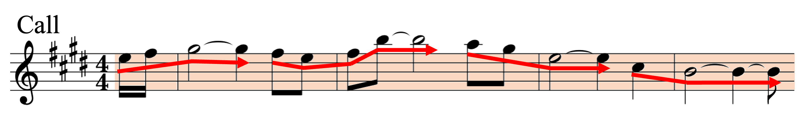 | Call (melody) |
Call (melody and accompaniment) |
| 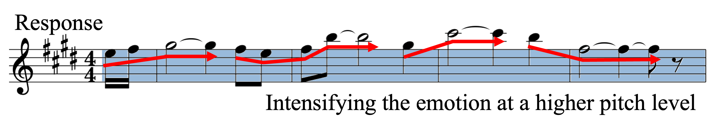 | Response (melody) |
Response (melody and accompaniment) |
| 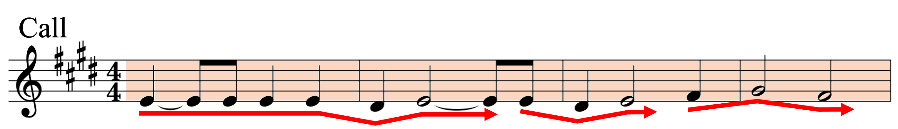 | Call (melody) |
Call (melody and accompaniment) |
| 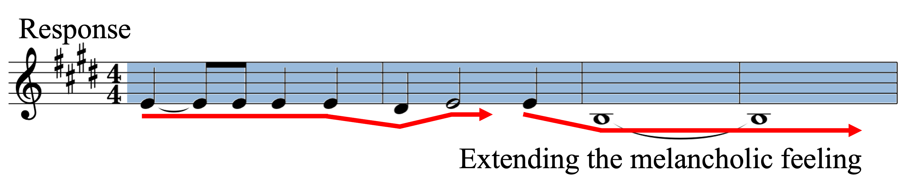 | Response (melody) |
Response (melody and accompaniment) |
| Call (melody) |
Call (melody and accompaniment) |
| 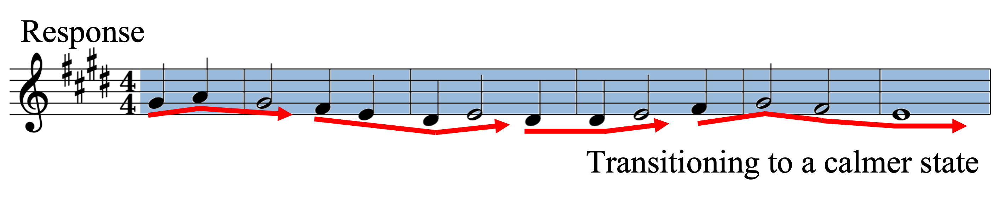 | Response (melody) |
Response (melody and accompaniment) |
| 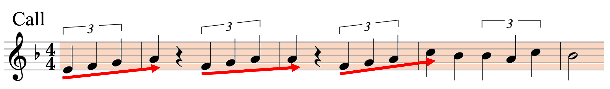 | Call (melody) |
Call (melody and accompaniment) |
| 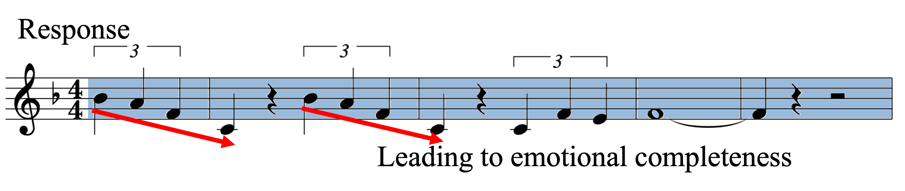 | Response (melody) |
Response (melody and accompaniment) |
| 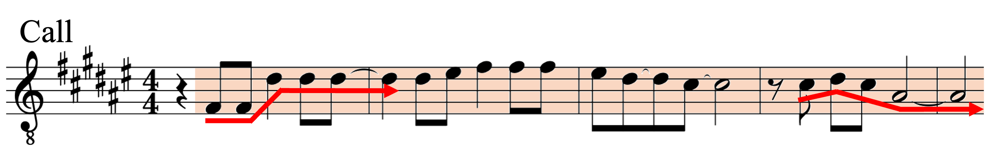 | Call (melody) |
Call (melody and accompaniment) |
| Response (melody) |
Response (melody and accompaniment) |
| Call ("Pearl of the Orient" by Ta-yu Lo) |
Ground-truth Response |
| Music-Transformer |
CP-Transformer |
HAT |
| CRG |
 Evidence supports that the performance of our proposed model is enhanced through the integration of a knowledge-enhanced mechanism
and multiple training tasks.
Evidence supports that the performance of our proposed model is enhanced through the integration of a knowledge-enhanced mechanism
and multiple training tasks.
| Call ("Drowning Sorrows" by Buyi Mao) |
Ground-truth Response |
| CRG-Base |
CRG-K |
CRG-KM1 |
CRG-KM2 |
| CRG-KM12 |
| Call ("Sweet As Honey" by Teresa Teng) |
Ground-truth Response |
| Random |
Distinct |
Similar |
| Call ("Leave With Sorrow" by Yuanjie Li) |
Ground-truth Response |
| k=1 |
k=1 |
| k=3 |
k=3 |
| k=5 |
k=5 |
| k=8 |
k=8 |
| 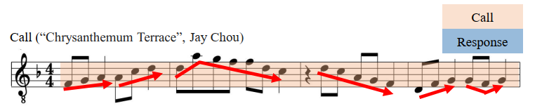 | Call (melody) |
Call (melody and accompaniment) |
| 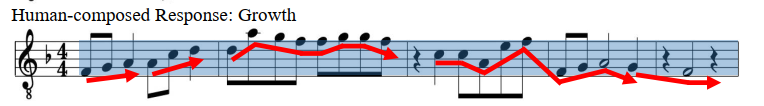 | Growth (melody) |
Growth (melody and accompaniment) |
| 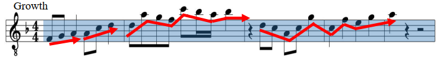 | Growth (melody) |
Growth (melody and accompaniment) |
| 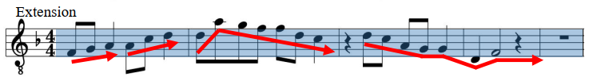 | Extension (melody) |
Extension (melody and accompaniment) |
| 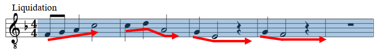 | Liquidation (melody) |
Liquidation (melody and accompaniment) |
| 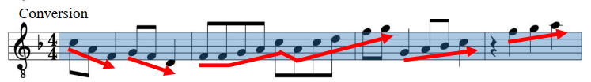 | Conversion (melody) |
Conversion (melody and accompaniment) |
| 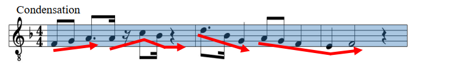 | Condensation (melody) |
Condensation (melody and accompaniment) |